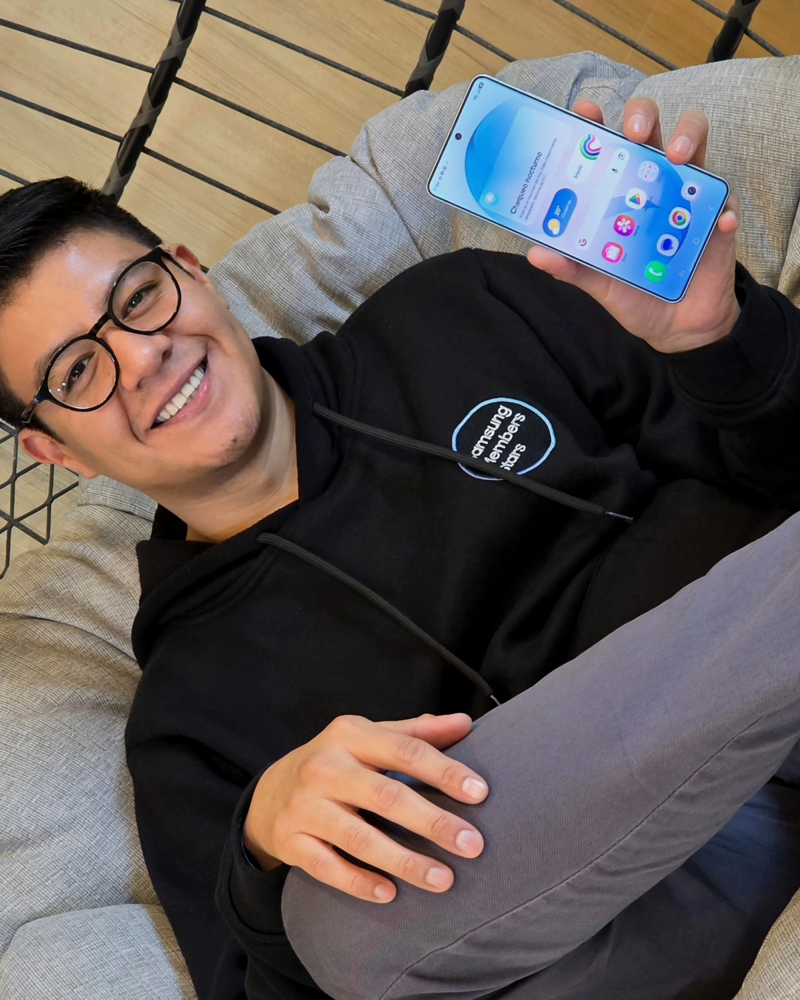

EDICIÓN PERSONAL
GALAXYINSIDER
La entrevista aún no termina.
Bienvenido a la Sala de Prensa Galaxy. Descubre qué dispositivo refleja mejor tu forma de vivir la tecnología.
6 preguntas · aproximadamente 1 minuto
GALAXY INSIDERENTREVISTA
01 / 06
TU GALAXY IDEAL
GALAXY INSIDERLONDRES 2026
NOTA DEL EDITOR
Gracias por formar parte de esta edición.
Galaxy Insider nació después del Galaxy Unpacked Londres 2026 con una idea sencilla: la tecnología también puede contar historias.
“Cada Galaxy cuenta una historia. Gracias por compartir la tuya.”
Martín Martínez
Samsung Members Star México